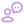

Online - gratuito
Sorteador de Números

Como funciona o sorteador de números?
O sorteador utiliza um algoritmo de geração aleatória para criar números dentro do intervalo especificado pelo usuário.Posso escolher o intervalo dos números?
Sim, você pode definir os valores mínimo e máximo para o intervalo dos números sorteados.RESULTADO DO SORTEIO
1º resultado
- 23
- 12
Como funciona o sorteador de números?
O sorteador utiliza um algoritmo de geração aleatória para criar números dentro do intervalo especificado pelo usuário.Posso escolher o intervalo dos números?
Sim, você pode definir os valores mínimo e máximo para o intervalo dos números sorteados.